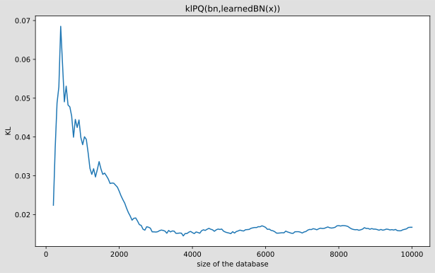

Learn CPTs of Bayesian Netork¶
%matplotlib inline
from pylab import *
import matplotlib.pyplot as plt
import os
import pyAgrum as gum
import pyAgrum.lib.notebook as gnb
Loading two BNs¶
bn=gum.loadBN(os.path.join("out","VisitAsia.bif"))
bn2=gum.loadBN(os.path.join("out","VisitAsia.bif"))
gnb.sideBySide(bn,bn2,
captions=['First bn','Second bn'])
bn.cpt("D")
| 0.9000 | 0.1000 | ||
| 0.2000 | 0.8000 | ||
| 0.3000 | 0.7000 | ||
| 0.1000 | 0.9000 | ||
Randomizing the parameters¶
bn.generateCPTs()
bn2.generateCPTs()
Direct comparison of parameters¶
from IPython.display import HTML
gnb.sideBySide(bn.cpt(3),
bn2.cpt(3),
captions=['<h3>cpt of node 3 in first bn</h3>','<h3>same cpt in second bn</h3>'])
Exact KL-divergence¶
Since the BN is not too big, BruteForceKL can be computed …
g1=gum.ExactBNdistance(bn,bn2)
before_learning=g1.compute()
print(before_learning['klPQ'])
2.1507546203131174
Just to be sure that the distance between a BN and itself is 0 :
g0=gum.ExactBNdistance(bn,bn)
print(g0.compute()['klPQ'])
0.0
Generate a database from the original BN¶
gum.generateCSV(bn,os.path.join("out","test.csv"),10000,False)
-69612.60067622665
Using pandas for _counting¶
As an exercise, we will use pandas to learn the parameters. However the simplest way to learn parameters is to use BNLearner :-). Moreover, you will be able to add priors, etc.
# using bn as a template for the specification of variables in test.csv
learner=gum.BNLearner(os.path.join("out","test.csv"),bn)
bn3=learner.learnParameters(bn.dag())
#the same but we add a Laplace adjustment as a Prior
learner=gum.BNLearner(os.path.join("out","test.csv"),bn)
learner.useAprioriSmoothing(1000) # a count C is replaced by C+1000
bn4=learner.learnParameters(bn.dag())
after_pyAgrum_learning=gum.ExactBNdistance(bn,bn3).compute()
after_pyAgrum_learning_with_laplace=gum.ExactBNdistance(bn,bn4).compute()
print("without priori :{}".format(after_pyAgrum_learning['klPQ']))
print("with prior smooting(1000):{}".format(after_pyAgrum_learning_with_laplace['klPQ']))
without priori :0.002022052419198859
with prior smooting(1000):0.1361356677351893
Now, let’s try to learn the parameters with pandas¶
import pandas
df=pandas.read_csv(os.path.join("out","test.csv"))
df.head()
| T | A | S | L | X | D | B | E | |
|---|---|---|---|---|---|---|---|---|
| 0 | 1 | 0 | 0 | 1 | 1 | 1 | 0 | 0 |
| 1 | 1 | 0 | 0 | 0 | 1 | 1 | 0 | 1 |
| 2 | 1 | 0 | 0 | 1 | 1 | 1 | 1 | 1 |
| 3 | 1 | 0 | 0 | 1 | 1 | 1 | 0 | 1 |
| 4 | 1 | 1 | 1 | 1 | 0 | 1 | 0 | 0 |
We use the crosstab function in pandas
c=pandas.crosstab(df['D'],[df['T'],df['B']])
c
| T | 0 | 1 | ||
|---|---|---|---|---|
| B | 0 | 1 | 0 | 1 |
| D | ||||
| 0 | 750 | 716 | 1843 | 2190 |
| 1 | 724 | 451 | 2124 | 1202 |
Playing with numpy reshaping, we retrieve the good form for the CPT from the pandas cross-table
gnb.sideBySide('<pre>'+str(np.array((c/c.sum().apply(np.float32)).transpose()).reshape(2,2,2))+'</pre>',
bn.cpt(bn.idFromName('D')),
captions=["<h3>Learned parameters in crosstab","<h3>Original parameters in bn</h3>"])
A global method for estimating Bayesian network parameters from CSV file using PANDAS¶
def computeCPTfromDF(bn,df,name):
"""
Compute the CPT of variable "name" in the BN bn from the database df
"""
id=bn.idFromName(name)
domains=[bn.variableFromName(name).domainSize()
for name in bn.cpt(id).var_names]
parents=list(bn.cpt(id).var_names)
parents.pop()
if (len(parents)>0):
c=pandas.crosstab(df[name],[df[parent] for parent in parents])
s=c/c.sum().apply(np.float32)
else:
s=df[name].value_counts(normalize=True)
bn.cpt(id)[:]=np.array((s).transpose()).reshape(*domains)
def ParametersLearning(bn,df):
"""
Compute the CPTs of every varaible in the BN bn from the database df
"""
for name in bn.names():
computeCPTfromDF(bn,df,name)
ParametersLearning(bn2,df)
KL has decreased a lot (if everything’s OK)
g1=gum.ExactBNdistance(bn,bn2)
print("BEFORE LEARNING")
print(before_learning['klPQ'])
print
print("AFTER LEARNING")
print(g1.compute()['klPQ'])
BEFORE LEARNING
2.1507546203131174
AFTER LEARNING
0.016727399217190093
And CPTs should be close
gnb.sideBySide(bn.cpt(3),
bn2.cpt(3),
captions=["<h3>Original BN","<h3>learned BN</h3>"])
Influence of the size of the database on the quality of learned parameters¶
What is the effect of increasing the size of the database on the KL ? We expect that the KL decreases to 0.
res=[]
for i in range(200,10001,50):
ParametersLearning(bn2,df[:i])
g1=gum.ExactBNdistance(bn,bn2)
res.append(g1.compute()['klPQ'])
fig=figure(figsize=(10,6))
ax = fig.add_subplot(1, 1, 1)
ax.plot(range(200,10001,50),res)
ax.set_xlabel("size of the database")
ax.set_ylabel("KL")
t=ax.set_title("klPQ(bn,learnedBN(x))")
